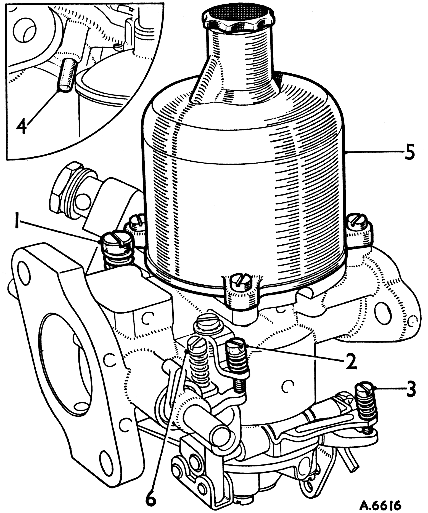
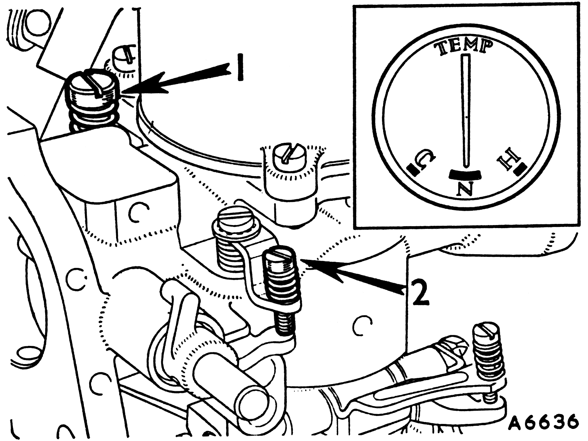
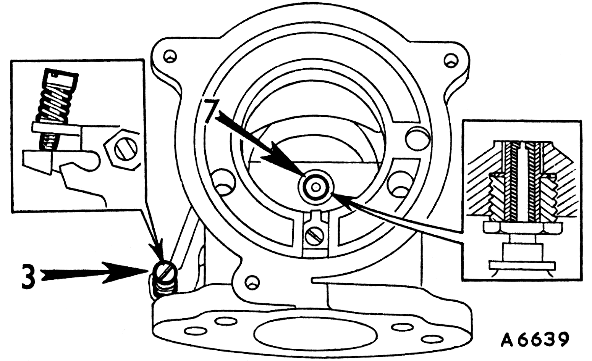
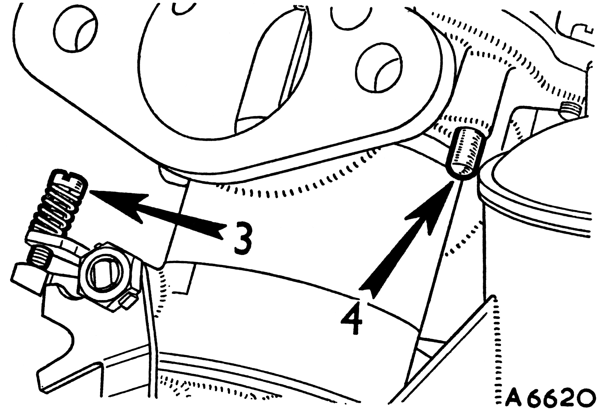
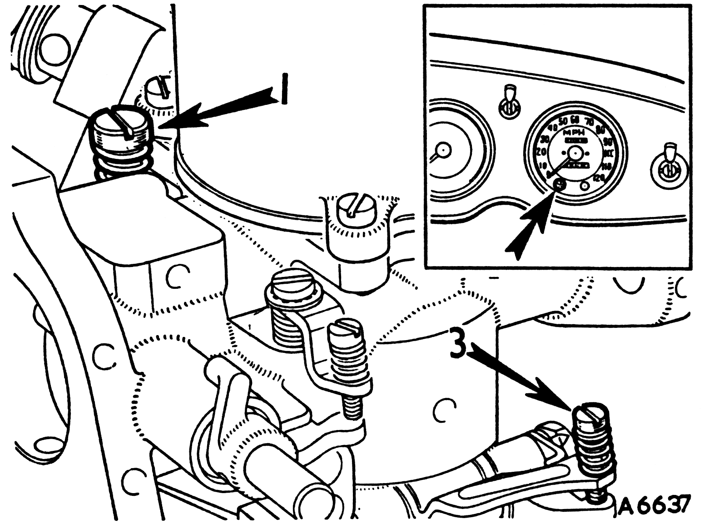

|

The Type HD Carburetter
- Slow-running valve.
- Fast-idle adjusting screw.
- Jet adjusting screw.
|
- Piston lifting pin.
- Piston/suction chamber.
- Throttle adjusting screw (when fitted).
|
Tuning
Single carburetters

1
- Run the engine up to normal running temperature.
- Switch off the engine.
- Unscrew the fast-idle adjusting screw (2) to clear the throttle stop with the throttle closed.
- Screw down the slow-running valve (1) onto its seating, then unscrew it 3-1/2 turns.
|
|

2
- Remove the piston/suction chamber unit.
- Turn the jet adjusting screw (3) until the jet (7) is flush with the bridge of the carburetter.

3
- Replace the piston/suction chamber unit.
- Check that the piston falls freely onto the bridge when the lifting pin (4) is released. If not, see items 15,16, and 17.
- Lower the jet by turning the jet adjusting screw (3) down 2-1/2 turns.

4
- Restart the engine and adjust the slow-running valve (1) to give the desired idling as indicated by the glow of the ignition warning light.
- Turn the jet adjusting screw (3), up to weaken or down to enrich, until the fastest idling speed consistent with even running is obtained.
- Re-adjust the slow-running valve (1), if necessary, to give correct idling.
|